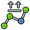
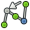

L'atelier de simulation de robot permet de simuler les robots à 6 axes industriels, comme par exemple Kuka. Vous pouvez accomplir les tâches suivantes :
- mettre en place un environnement de simulation avec un robot et des pièces de travail
- créer et remplir des trajectoires
- décomposer les fonctions d'une pièce CAO en une trajectoire
- simuler le mouvement et l'accessibilité d'un robot
- exporter la trajectoire vers un fichier programme de robot
Vous pouvez trouver des exemples ici : fichiers d'exemple ou essayez le tutoriel Robot.
Contents
Outils
Voici les principales commandes dont vous pouvez vous servir pour créer une configuration de robot.
Robots
Les outils pour créer et gérer les robots à 6 axes
-
 Créer un robot: Insère un nouveau robot dans la scène
Créer un robot: Insère un nouveau robot dans la scène -
 Simuler une trajectoire: Ouvre le dialogue de simulation afin de régler une simulation
Simuler une trajectoire: Ouvre le dialogue de simulation afin de régler une simulation -
 Exporter une trajectoire: Exporte la trajectoire dans un fichier programme robot
Exporter une trajectoire: Exporte la trajectoire dans un fichier programme robot -
 Définir la positon de départ: Définit la position de départ d'un robot
Définir la positon de départ: Définit la position de départ d'un robot -
 Restaurer la positon de départ: Retourne le robot à sa positon de départ
Restaurer la positon de départ: Retourne le robot à sa positon de départ
Trajectoires
Les outils pour créer et manipuler les trajectoires. Il y en a deux sortes, paramétriques et non-paramétriques.
Trajectoire non-paramétriques
-
 Créer une trajectoire: Créé une nouvelle trajectoire vide
Créer une trajectoire: Créé une nouvelle trajectoire vide -  Définir l'orientation par défaut: Règle l'orientation par défaut des points de passage
-
 Définir les paramètres de vitesse par défaut: Règle les valeurs par défaut pour la création de points de passage
Définir les paramètres de vitesse par défaut: Règle les valeurs par défaut pour la création de points de passage -
 Insérer dans la trajectoire: Insère un point de passage de la position actuelle du robot dans la trajectoire
Insérer dans la trajectoire: Insère un point de passage de la position actuelle du robot dans la trajectoire -  Insérer dans la trajectoire: Insère un point de passage de la position actuelle du pointeur de la souris dans la trajectoire
{kind=link}
{kind=link}
Trajectoire paramétriques
- Générer une trajectoire à partir d'un ensemble d'arêtes: Insère un nouvel objet dont les arêtes formeront une trajectoire
-
 Habiller une trajectoire: Créé un habillage qui supplante certaines propriétés d'une trajectoire
Habiller une trajectoire: Créé un habillage qui supplante certaines propriétés d'une trajectoire -
 Grouper et connecter des trajectoires: Crée un composé (compound) et connecte un ensemble de trajectoires
Grouper et connecter des trajectoires: Crée un composé (compound) et connecte un ensemble de trajectoires
{kind=link}
Script
Cette section est générée à partir de : https://github.com/FreeCAD/FreeCAD_sf_master/blob/master/src/Mod/Robot/RobotExample.py Vous pouvez utiliser ce fichier directement si vous le désirez.
Voici un exemple montrant comment utiliser la classe de robot de base Robot6Axis qui représente un robot industriel à 6 axes. L'atelier Robot dépend de l'atelier Pièce, mais pas des autres modules. Il fonctionne principalement avec les types de base Placement, Vecteur et Matrice. Nous n'avons donc besoin que de :
from Robot import * from Part import * from FreeCAD import *
Éléments de base robot
Créer le robot. Si vous ne spécifiez pas une autre cinématique, il devient un Puma 560
rob = Robot6Axis() print rob
Accès à l'axe et au Tcp. Les axes vont de 1-6 et sont exprimés en degrés :
Start = rob.Tcp print Start print rob.Axis1
Déplacer le premier axe du robot:
rob.Axis1 = 5.0
Le Tcp a changé (cinématique avant)
print rob.Tcp
Déplacer le robot à sa position de départ (cinématique inverse):
rob.Tcp = Start print rob.Axis1
De même avec l'axe 2:
rob.Axis2 = 5.0 print rob.Tcp rob.Tcp = Start print rob.Axis2
Points de passage :
w = Waypoint(Placement(),name="Pt",type="LIN") print w.Name,w.Type,w.Pos,w.Cont,w.Velocity,w.Base,w.Tool
En générer davantage. La trajectoire trouve toujours automatiquement un nom unique pour les points de passage
l = [w] for i in range(5): l.append(Waypoint(Placement(Vector(0,0,i*100),Vector(1,0,0),0),"LIN","Pt"))
Créer une trajectoire
t = Trajectory(l) print t for i in range(7): t.insertWaypoints(Waypoint(Placement(Vector(0,0,i*100+500),Vector(1,0,0),0),"LIN","Pt"))
Afficher une liste de tous les points de passage :
print t.Waypoints del rob,Start,t,l,w
Travailler avec les objets du document
Travailler avec les objets du document robot : d'abord créer un robot dans le document courant
if(App.activeDocument() == None):App.newDocument()
App.activeDocument().addObject("Robot::RobotObject","Robot")
Définir la représentation visuelle et la définition cinématique (voir robot à 6 axes et Préparation VRML pour simulation de robot pour plus de détails)
App.activeDocument().Robot.RobotVrmlFile = App.getResourceDir()+"Mod/Robot/Lib/Kuka/kr500_1.wrl" App.activeDocument().Robot.RobotKinematicFile = App.getResourceDir()+"Mod/Robot/Lib/Kuka/kr500_1.csv"
La positon de départ des axes (seulement celles qui diffèrent de 0)
App.activeDocument().Robot.Axis2 = -90 App.activeDocument().Robot.Axis3 = 90
Récupérer la position Tcp
pos = FreeCAD.getDocument("Unnamed").getObject("Robot").Tcp
Déplacer le robot
pos.move(App.Vector(-10,0,0))
FreeCAD.getDocument("Unnamed").getObject("Robot").Tcp = pos
Créer un objet de trajectoire vide dans le document courant
App.activeDocument().addObject("Robot::TrajectoryObject","Trajectory")
Obtenir la trajectoire
t = App.activeDocument().Trajectory.Trajectory
Ajouter la position TCP actuelle du robot à la trajectoire
StartTcp = App.activeDocument().Robot.Tcp t.insertWaypoints(StartTcp) App.activeDocument().Trajectory.Trajectory = t print App.activeDocument().Trajectory.Trajectory
Insérer quelques points de passage supplémentaires et le point de départ à nouveau à la fin :
for i in range(7): t.insertWaypoints(Waypoint(Placement(Vector(0,1000,i*100+500),Vector(1,0,0),i),"LIN","Pt")) t.insertWaypoints(StartTcp) # end point of the trajectory App.activeDocument().Trajectory.Trajectory = t print App.activeDocument().Trajectory.Trajectory
Simulation
À compléter...
Exporter la trajectoire
La trajectoire est exportée par Python. Cela veut dire que pour chaque type de contrôle cabinet, il y a un module post-processeur Python. Voici en détail la description du post-processeur Kuka :
from KukaExporter import ExportCompactSub ExportCompactSub(App.activeDocument().Robot,App.activeDocument().Trajectory,'D:/Temp/TestOut.src')
Et c'est ainsi que ça se fait :
for w in App.activeDocument().Trajectory.Trajectory.Waypoints:
(A,B,C) = (w.Pos.Rotation.toEuler())
print ("LIN {X %.3f,Y %.3f,Z %.3f,A %.3f,B %.3f,C %.3f} ; %s"%(w.Pos.Base.x,w.Pos.Base.y,w.Pos.Base.z,A,B,C,w.Name))
Tutorials